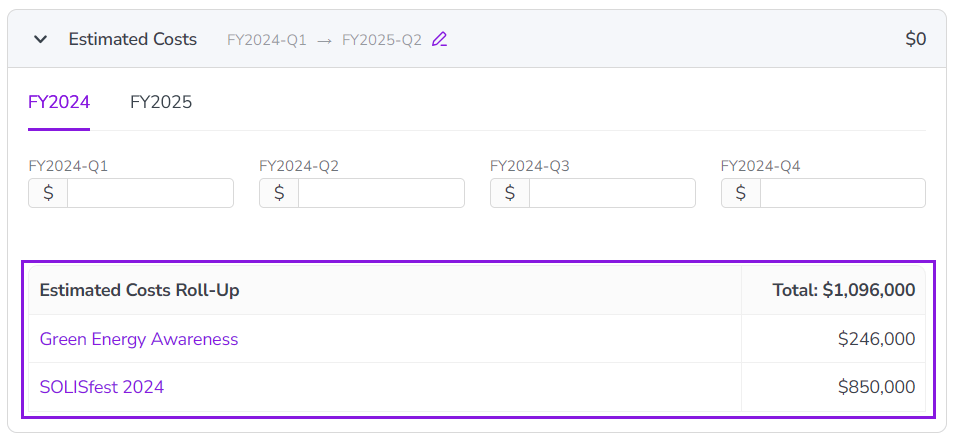
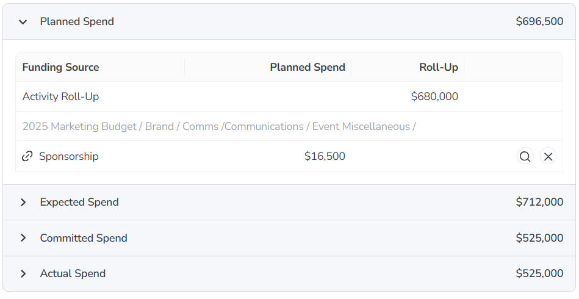
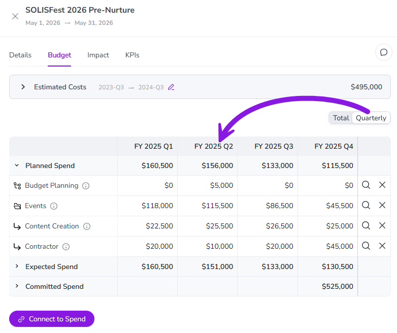
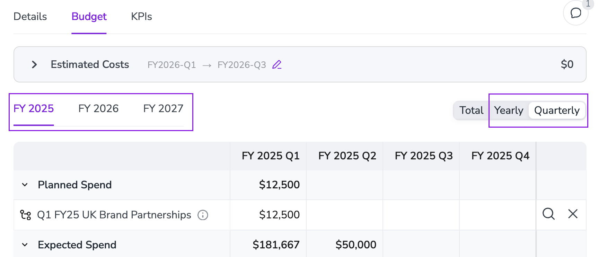
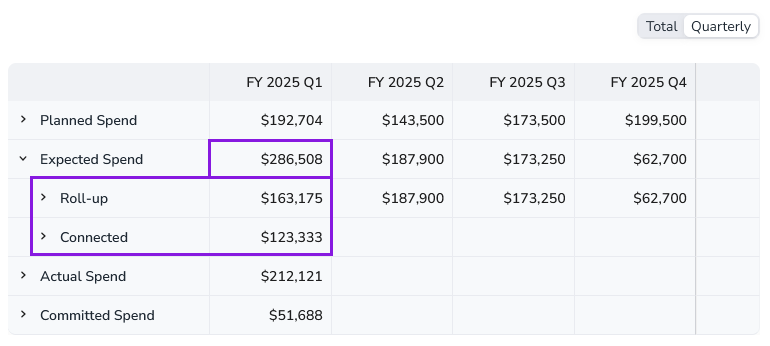
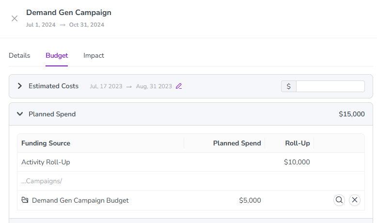

Track and analyze activity budgets
In Uptempo Campaign Management, Estimated Costs and Connect to Spend help you to plan, track, and evaluate your marketing budgets more effectively.
With Estimated Costs, you can define the expected cost of activities during the planning phase, giving you a forward-looking view of how your budget is allocated across campaigns, activities, and time periods. This helps you to forecast more accurately, identify budget constraints early, and align planned spend with your marketing objectives.
Connect to Spend links your activities to spend data from Uptempo Financial Management. Making spend data available on your activities gives you clearer insight into budget performance, which lets you easily monitor how spend is performing and reallocate budget if needed.
How activity budget tracking works
When you are planning your marketing activities, the budgets that will fund them may not yet be finalized. If you have an initial sense of what an activity is likely to cost, you can use Estimated Costs to record that estimate directly on the activity.
You can enter estimated costs at any level of your activity hierarchy. All estimated costs automatically aggregate up to the top of the activity hierarchy along hierarchy paths, so you can plan costs top-down or bottom-up, and get insight into anticipated costs at all levels.
After budgets are set, you can use Connect to Spend to connect investments to activities. When you do this, budget data from the connected investment is displayed directly on the activity, so you can easily view the activity's planned, expected, committed, and actual spend, and compare it to the cost assumptions you made during the planning phase.
Track estimated costs on activities
For each activity, you can enter what you expect the activity to cost during the planning phase. Estimated costs automatically roll up to ancestor activities, so you can both record and view estimated costs at any level of the hierarchy.
After you enter the estimated cost for an activity, you can reference it again at any time.
Add a cost estimate to an activity
In the
 Activities section, click on the activity for which you want to add the estimated cost. The activity's details panel opens.
Activities section, click on the activity for which you want to add the estimated cost. The activity's details panel opens.In the details panel, click the Budget section to open it.
In the Budget section, click the Estimated Costs panel to expand it.

Optional: All cost estimates have a default date range (typically, the in-market dates for the activity). To edit the date range, click
 Edit the date range, then use the date picker to select the start and end dates.
Edit the date range, then use the date picker to select the start and end dates.Enter estimated costs. You will see either a single input field, or multiple input fields, depending on whether your Uptempo instance is configured for total or quarterly estimated cost amounts:
If your Uptempo instance is set up to use the Total Estimated Costs format, you specify a single amount for the full date range.
Enter the estimated cost amount into the single total input field:

If your Uptempo instance is set up to use the Quarterly Estimated Costs format, you specify separate amounts for each quarter in the date range:
Enter estimated cost amounts into each of the quarterly input fields:

If the date range covers more than one year, each of the years in the date range will also be shown. Click a year to switch to the input fields for that year:

Click anywhere outside an estimated cost input field to finish editing. The cost estimate amount you entered is saved automatically.
View an activity's estimated costs
In the
Activities section, click on the activity for which you want to view the estimated cost. The activity's details panel opens.In the details panel, click the Budget section to open it.
In the Budget section, the Estimated Costs panel displays the estimated cost set on the current activity.
If the Estimated Costs panel displays an
 Expand icon, click anywhere on the Estimated Costs panel to expand it and display more information:
Expand icon, click anywhere on the Estimated Costs panel to expand it and display more information:If you enter estimated costs by quarter (instead of as a single total amount), you can view the estimated cost amounts by quarter in the expanded view.
If the activity has child activities where estimated costs have been entered, these activities and their estimated costs are listed under Estimated Costs Roll-Up in the expanded view, along with an aggregate total:

Track spend on activities
After an activity has been connected to an investment, you can view associated spend data from Uptempo Financial Management in the Budget section of the activity's details panel at any time.
View an activity's spend data
In the
Activities section, click on the activity for which you want to view spend data. The activity's details panel opens.In the details panel, click the Budget section to open it.
If the activity is connected to an investment, or if any of its descendant activities are connected to investments, you will see up to four spend data panels on the Budget section. Each panel displays the aggregate total spend of the specified type from all investments connected to the activity and all descendant activities.

Click on a spend data panel to expand it and view the details of the connected investments. The expanded view displays the following information:
- Funding Source column
Lists the names of all investments connected to the current activity, and their locations in the budget hierarchy.
- Spend data category column
For each investment connected to the current activity, displays the amount of that investment allocated to the activity in the selected spend data category.
- Roll-Up column
On the Activity Roll-Up row, displays the total amount for the selected spend data category aggregated from all descendant activities of the current activity, based on investments linked to those descendant activities.

Break down activity spend data by time period
By default, the system displays total amounts for the spend data on activities, representing the full time period covered by the connected investment.
Because timing is often a critical consideration with budget spend, you can also view more granular annual and quarterly breakdowns of activity spend data. This gives you a more detailed view of exactly when spend is happening, which can help you to spot potential issues (such as overspending in a particular quarter).
Single year: On activities connected to investments from one budget year, select the Quarterly option to see spend data broken down by quarter:

Multiple years: On activities connected to investments from more than one budget year, a Yearly option is also available (in addition to Quarterly). With both options, you can use the FY year tabs to choose the fiscal year for which you want to view data:

{kind=link}
{kind=link}
You can view spend data breakdowns by time period at any level of the activity hierarchy. On higher-level activities, the system lists amounts aggregated from connected investments on lower-level activities (Roll-up) separately from amounts associated with investments connected to the activity itself (Connected):
{kind=link}

Understanding spend data panel amounts
Both activities and investments exist within multi-level hierarchies, and you can make connections between activities and investments at multiple levels. The amounts shown when you expand the spend data panels are designed to make it easy to understand how connections made at lower levels of the activity hierarchy impact funding at the level you're currently viewing.
For example, assume you have an activity called Demand Gen Campaign, and you connect it to a corresponding budget category in Uptempo Financial Management called Demand Gen Campaign Budget:
The Demand Gen Campaign Budget budget category contains line items for specific funding amounts that total $15,000. Therefore, when you connect Demand Gen Campaign to this budget category, you know that you have $15,000 available to fund the campaign.
As you plan out the campaign, you create child activities under Demand Gen Campaign for each of the tactics you plan to use. You connect each child activity to a corresponding line item in the connected Demand Gen Campaign Budget budget category to track how much of the overall budget each tactic is consuming.
For example, you allocate $7,000 to Tactic A and $3,000 to Tactic B. Together, these two tactics consume $10,000 of the $15,000 available.
At this point, the Details > Budget section of the Demand Gen Campaign activity looks like this: 
Here, you can see at a glance that:
The total planned spend for this campaign is $15,000.
The portion of the investment that is already consumed by child activities is $10,000 (the amount shown on the Activity Roll-Up row).
The amount of the total planned spend that remains available for activities in this campaign is $5,000 (the amount shown on the Demand Gen Campaign Budget row).
This amount is calculated by subtracting the $10,000 Activity Roll-Up amount from the $15,000 Planned Spend total amount.
This breakdown allows you to quickly understand exactly how much has been spent, and how much remains available to fund other tactics (or reassign elsewhere), when looking at any level of your activity hierarchy.